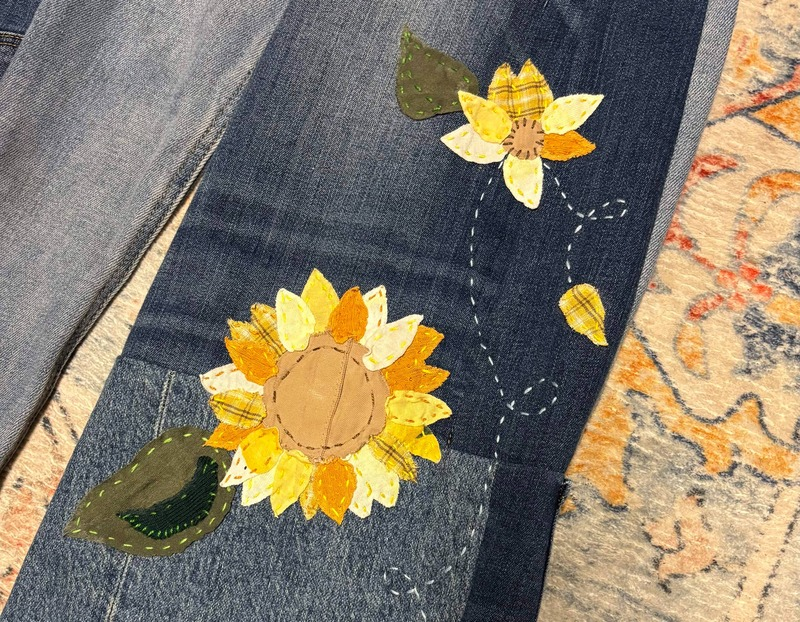

Climate Change Inspired Patchwork Jeans
Date: April 14, 2025
As I was entering middle school, Greta Thunburg’s efforts in protests and spreading awareness was at its peak. However, as a newly turned 12 year old, I found the concept of climate change frightening- how could the planet be fading away when I had barely lived yet? From then on, I started a series of small actions in attempts to mitigate my carbon output such as avoiding consuming beef, bringing reusable bags to stores, and much more. Fast forward a few years to senior year of high school where I had taken up a new hobby: sewing. I quickly realized that sewing could be utilized to upcycle unused clothes and excess fabric waste. This piece was inspired by my dream of ending climate change, so I decided to upcycle clothes as the medium. In addition, the flower design was influenced by “The Time Machine,” by H.G. Wells. In the novel, flowers represent a multitude of things such
as kindness and empathy persisting despite the fact that time has passed
drastically. This felt like a perfect motif to sew into this new pair of
jeans as I hope people will approach our planet with kindness and empathy.
When my sister moved out to college, she left boxes and boxes
of clothes at index. For that, I will always be thankful for as that pile
of clothing is one of my #1 visited spots when I need fabric.
Specifically, when I am trying to modify something existing, rather than
making a piece from scratch. By digging through my sister’s clothes, I
managed to find three pairs of pretty skinny jeans. Only by using three,
would I get the target fit I wanted for this pair of pants. So, I used a
seam ripper to disassemble the pairs of pants, using one for the base,
while using the others to make up fabric on the width, length, and leg
openings.
Now although this was a fairly time consuming aspect, I had
not gotten to the main performer of the show yet– the sunflower design I
was going to put onto the pants. I revisited my sister’s pile of unwanted
clothes yet again, pulling out yellow, orange, white, green and brown
clothes I saw. Then, I cut pieces out of these clothes (in optimal spots
so I could later modify those clothes too) to make the petals, leaves,
disc florets. Next, I had to HAND SEW each part of the flower onto the
pants. I used embroidery thread to sew each piece of the flower on, as I
wanted to emphasize the stitched patchwork effect. To make this process
slightly faster, I first used double sided tape to tack a piece onto the
pants before hand sewing it down. I then repeated this process over and
over again, using an array of embroidery thread, before finishing the
project.